📖 使い方（図つき）
見たい所を押してください。画面の写真は、作り物の現場（山田邸など）です。
0 はじめに（全体の図）1 写真で現場を登録する2 仲間に現場を送る（登録する人）3 LINEで届いた現場を入れる4 電話と赤い字・帰る・削除5 ホーム画面に置く6 駐車場
0 はじめに（全体の図）
現場の入場・退場の電話とKYを、ボタン1つで開けるアプリです。入れた現場は自分のスマホの中だけに残ります。
最初の1回だけ
リンクが届いていない現場は「1 写真で現場を登録する」で入れます。
毎朝の流れ
アイコンから開く→邸名で探す→②入場に電話→⑤KYを開く→⑥駐車場へナビ
帰るとき→③退場に電話→Bの倉庫へ・自宅へ
画面の上の方
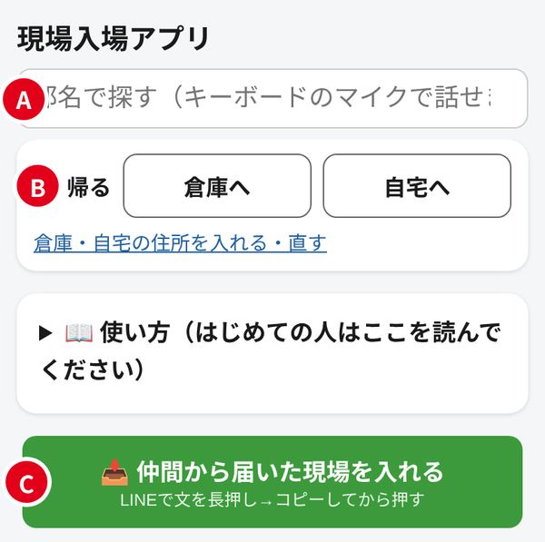
| A | 邸名で探す キーボードのマイクで話しても探せます |
| B | 帰る 倉庫・自宅へのナビ（→4） |
| C | 仲間から届いた現場を入れる LINEのリンクでうまくいかないとき（→3） |
現場のカード
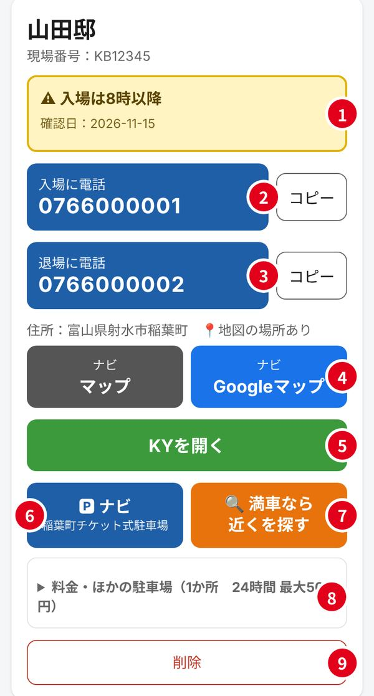
| 1 | 注意事項 入場の時刻など。黄色で出ます |
| 2 | 入場に電話 朝着いたら押す（→4） |
| 3 | 退場に電話 帰るときに押す（→4） |
| 4 | ナビ 現場まで道案内 |
| 5 | KYを開く KYの入力ページ |
| 6 | 🅿 ナビ 登録した駐車場まで道案内（→6） |
| 7 | 🔍 満車なら近くを探す 近くの駐車場が出ます（→6） |
| 8 | 料金・ほかの駐車場 駐車場の料金など（→6） |
| 9 | 削除 終わった現場を消す（→4） |
▲ 目次へ1 写真で現場を登録する
LINEのリンクが届いていない現場は、看板の写真で入れます。
1「＋ 現場を追加」を押す
画面の右下のオレンジのボタンです。
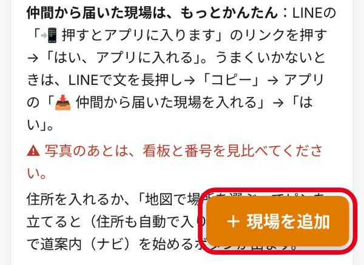
2「📷 看板の写真で登録」を押す
現場の看板を撮ります。番号が自動で入ります。

3看板と番号を見比べる
読み違いがあります。現場番号・入場と退場の電話番号を、看板と1つずつ見比べてください。違っていたら手で直します。

4「追加する」を押す
一番下の青いボタンです。
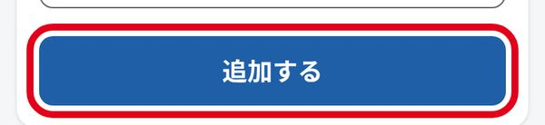
5入りました
一覧の上に「〇〇邸を追加しました」と出ます。

住所を入れるか、「🗺 地図で場所を選ぶ」でピンを立てると、カードに現場までの「ナビ」が出ます。
▲ 目次へ2 仲間に現場を送る（登録する人）
現場を仲間に教える人（登録する人）の手順です。
1「🔧 登録する人の表示」をオンにする
一覧の一番下にあります。1回押せば、次からもオンのままです。「直す」「📋 貼る文をコピー」「🅿 駐車場を登録」が出るようになります。

2「📋 貼る文をコピー」を押す
送りたい現場のカードの下にあります。
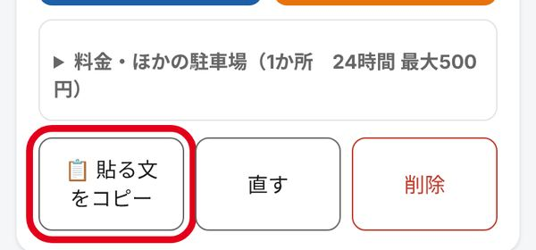
3LINEの邸名のトークに貼る
「コピーしました」と出たら、LINEを開いて邸名のトークに貼り、送ります。
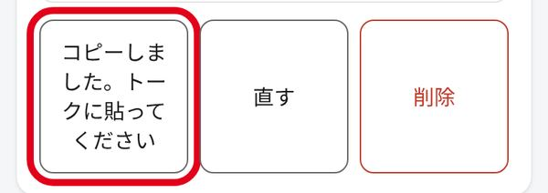
4仲間にはこう届きます
仲間はリンクを押して「はい」を押すだけで、アプリに入ります（→3）。
📲 山田邸の現場の情報（押すとアプリに入ります）
https://nyujo.genba-benri.com/#i=hPrA2JII…
⚠ 入場は8時以降
⚠ LINEに字で見えるのは、邸名と、入場の時刻・駐車・騒音などの決まりだけです。電話番号・住所・駐車場はリンクの中です。
近隣トラブルなどを注意事項に書くときは「近隣」「トラブル」の言葉を入れてください。LINEには出ません（よく使う言葉のボタン「近隣とトラブル中」が確実）。
▲ 目次へ3 LINEで届いた現場を入れる
仲間がLINEに貼った「📲」のリンクを押して、「はい」を押すだけです。
⚠ 先に「
5 ホーム画面に置く」のとおり、
「Webアプリとして開く」を切ってホーム画面に置いてください。切っていないと、リンクで入れた現場がアイコンから開いたアプリに出ません。
1LINEのリンクを押す
邸名のトークに、仲間からこういう文が届きます。青い字のリンクを押してください。
📲 山田邸の現場の情報（押すとアプリに入ります）
https://nyujo.genba-benri.com/#i=hPrA2JII…
⚠ 入場は8時以降
※LINEに見えるのは邸名と、入場の時刻・駐車などの決まりだけです。
2「はい、アプリに入れる」を押す
Safariでアプリが開き、この枠が出ます。
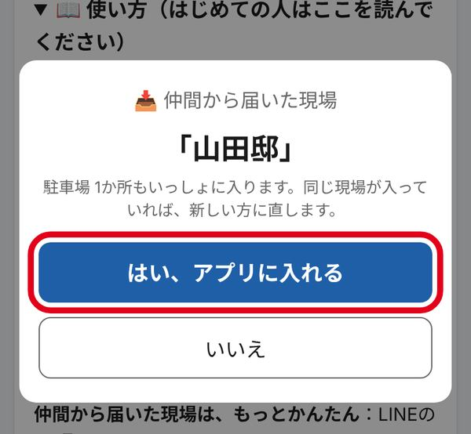
3入りました
一覧の上に「〇〇邸を追加しました」と出ます。前から入っている現場なら「上書きしました」と出て、新しい中身に直ります。
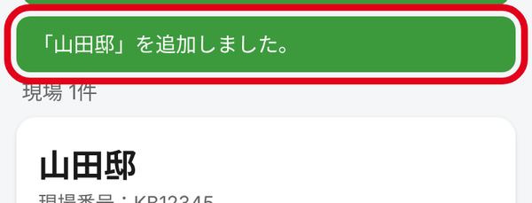
リンクでうまくいかないとき① LINEで仲間の文を
長押しして「コピー」
② アプリの緑の「📥 仲間から届いた現場を入れる」を押す
③ iPhoneは小さな「ペースト」が出たら押す
④「はい、アプリに入れる」を押す

▲ 目次へ4 電話と赤い字・帰る・削除
1朝：「入場に電話」を押す
そのまま電話がかかります。
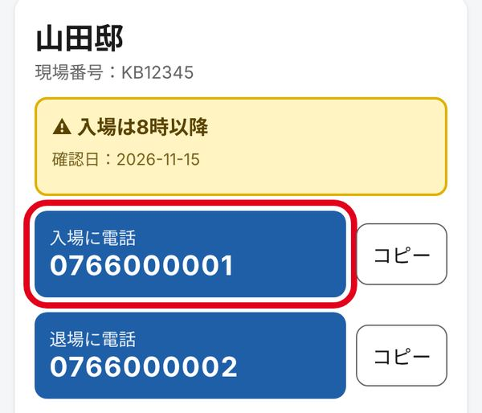
2赤い字が出ます
入場の電話を押した日は、退場の電話を押すまで、一番上に赤い字が出ます。赤い字を押しても退場に電話できます。
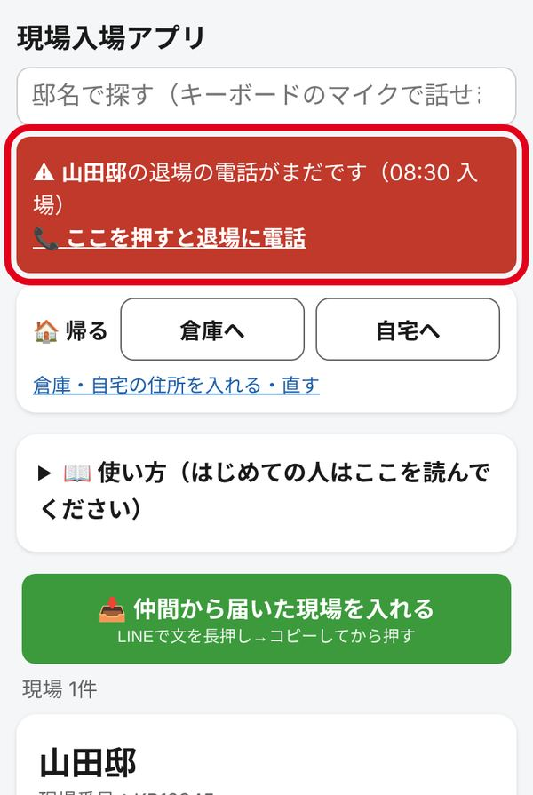
3帰るとき：「退場に電話」を押す
押すと赤い字が消えます。
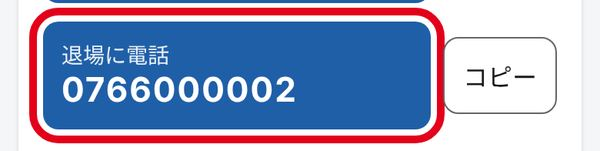
4倉庫・自宅へのナビ
上の「倉庫へ」「自宅へ」を押すと、ナビのボタンが出ます。最初に「倉庫・自宅の住所を入れる・直す」で住所を入れてください。
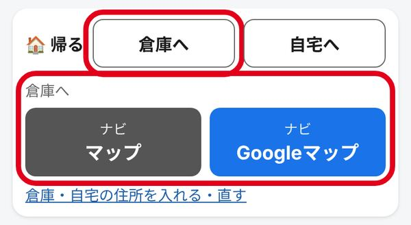
5終わった現場は「削除」
押すと「削除しますか？」と出ます。元に戻せません。
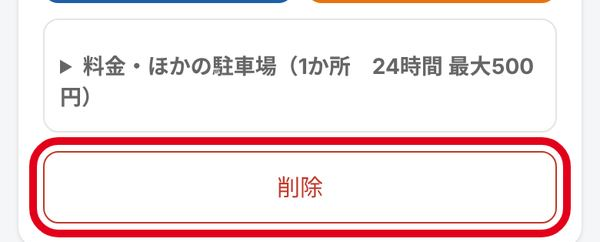
入場の時刻より早く押したとき注意事項に「入場は8時以降」とある現場で、8時より前に「入場に電話」を押すと、この枠が出ます。かけてよいときだけ「それでも入場に電話」を押してください。
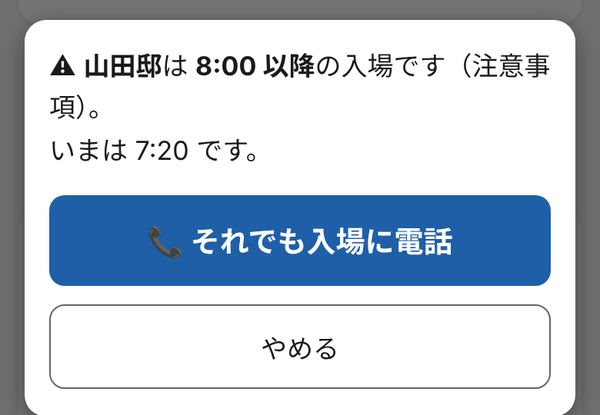
▲ 目次へ5 ホーム画面に置く
毎朝すぐ開けるように、アプリをホーム画面に置きます。最初に1回だけです。
iPhone
1Safariでアプリを開く
LINEのお知らせのURLを押すと、Safariで開きます。
2共有ボタン →「ホーム画面に追加」
画面の下にある共有ボタン（四角から上に矢印が出ているマーク）を押して、「ホーム画面に追加」を押します。見つからないときは、右下の「…」を押すと出ます。
3「Webアプリとして開く」を切る
右のスイッチが灰色（切れている）か見てください。緑なら押して灰色にします（①）。それから右上の「追加」を押します（②）。

⚠ 「Webアプリとして開く」が緑のままだと、LINEのリンクで入れた現場が、アイコンから開いたアプリに出ません。
4これからはアイコンから開く
ホーム画面の「現」のアイコンから開いてください。
やってはいけないこと
Safariの設定の「履歴とWebサイトデータを消去」をすると、入れた現場が全部消えます。
Android
Chromeの右上の「︙」→「ホーム画面に追加」→「追加」。
▲ 目次へ6 駐車場
現場に着いたら、カードの大きなボタンを押すだけです。
1「🅿 ナビ」を押す
仲間が登録した駐車場まで、地図アプリで道案内が始まります。
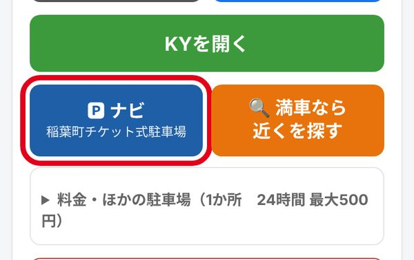
2満車なら「🔍 満車なら近くを探す」
Googleマップに、現場の近くの駐車場がいくつも出ます。
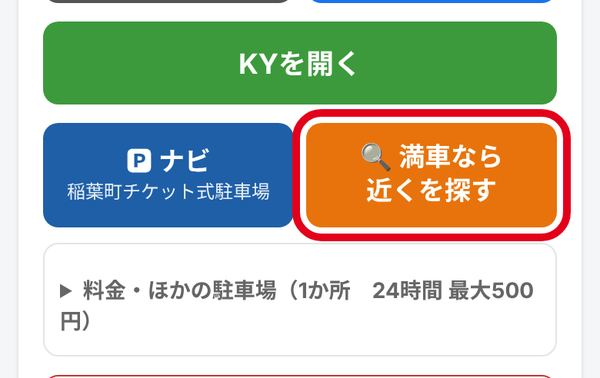
3料金を見るとき
「料金・ほかの駐車場」を押すと、料金・最大料金の決まり・車の大きさ・メモが出ます。
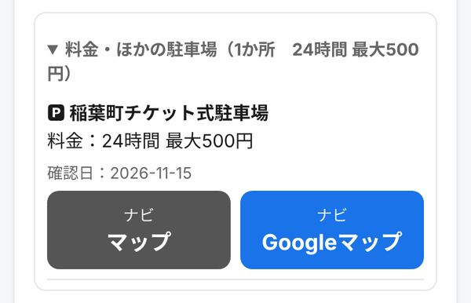
4駐車場がまだ無い現場
オレンジの「🔍 近くの駐車場を探す」だけが出ます。
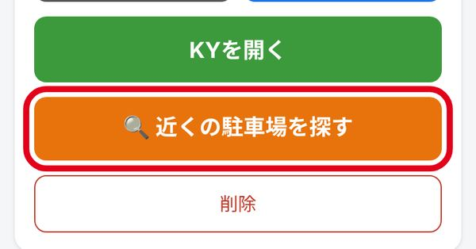
登録する人だけ：駐車場を登録する（駐車場に着いてから）
1「🔧 登録する人の表示」をオン
一覧の一番下にあります（→2）。
2「🅿 駐車場を登録」を押す
カードの駐車場のボタンの下に出ます。
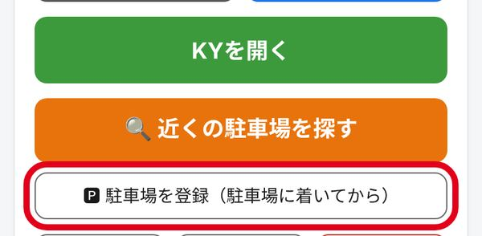
3駐車場の中で「📍 今いる場所で登録」
料金などは「📷 看板の写真で入れる」か手で入れて「この駐車場を保存」。保存すると「📋 知らせる文をコピー」が出るので、LINEの邸名のトークに貼ってください。